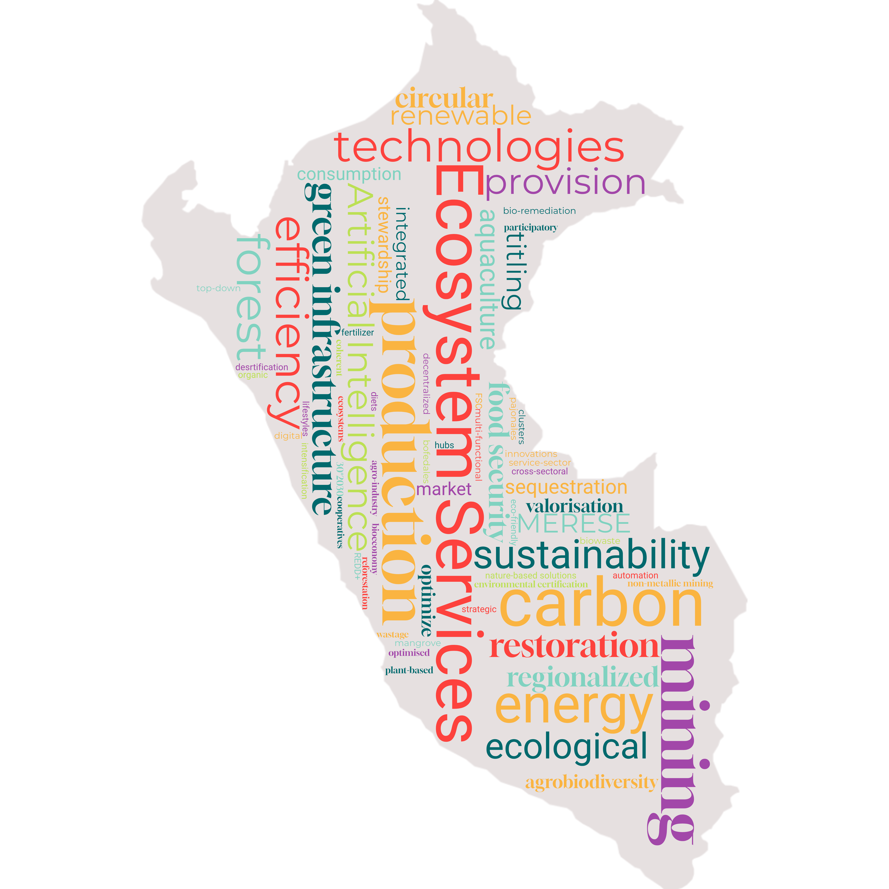

Nature for Society
The landscape of Peru in 2060 has been optimised to maintain the provision of key ecosystem services for society (1). This is achieved through strong cross-sectoral planning and a sustainability transformation driven by the adoption of green technologies and the mainstreaming of the economic valorisation of ecosystem services and biodiversity.

Characteristics
 Climate Change: RCP 2.6
Climate Change: RCP 2.6
 Population: 37.21 million
Population: 37.21 million
 Economic development: 1192 billion USD
Economic development: 1192 billion USD
 Value perspective on nature: Mainly Instrumental
Value perspective on nature: Mainly Instrumental
 Protected areas (proportion of Peru under protection): 30% by 2030
Protected areas (proportion of Peru under protection): 30% by 2030

Shifting Values and Lifestyles
The societal shift that enables the transformation of the landscape is rising GDP levels, leading to increased environmental awareness (2). Improved economic conditions allow communities to invest more in sustainable practices and environmental education. This reinforces the recognition of nature’s critical role in supplying vital ecosystem services, fostering a broader sense of environmental stewardship in the population. Through this impetus, the concept of ecosystem services is integrated in the economy, governance and planning (3).
In terms of lifestyle changes, there is a limited reduction in levels of personal consumption, for example reduced meat consumption, however prevailing ideas around what constitutes a high standard of living remain and the prevalence of resource efficiency improving technologies means that this is not a strong focus. Accordingly, economic growth is high, with GDP per capita reaching approximately 1192 billion USD by 2060 (converted to USD using purchasing power parity (PPP) in 2017) (4). Per capita living space is relatively large, and the trend of rural-urban migration continues such that ~92% of the population live in Urban areas by the year 2060 ((5): aligned with SSP1). Both of these factors that the contribute to a high level of total expansion in land utilized for human habitation.
Changing economic priorities
The economy transitions towards greater sustainability and diversification as the reliance on extractive industries is reduced and service-based sectors expand. One example of this is the expansion of the Payments for Ecosystem Services (PES or MERESE) sector. Learning the lessons from the implementation of PES schemes in water management, there is an expansion of schemes to conserve agrobiodiversity, as well the implementation of a high-integrity carbon market12.
1 https://www.gob.pe/institucion/minam/noticias/1058841-cop-29-peru-impulsa-mercados-de-carbono-que-aseguren-la-conservacion-ambiental-y-el-desarrollo-sostenible
2 https://vcmintegrity.org/wp-content/uploads/2021/05/VCMI-Consultation-Report_Espanol-1.pdf
3 https://observatorio.ceplan.gob.pe/ficha/o22_2024
The growth of the service-sector is decentralized, with large cities other than Lima, becoming more pronounced regional economic hubs3. This perpetuates the existing trend of rural-urban migration although disparities between Lima and other regional hubs are reduced. The development of the service sector leads to increasing formalisation of economic activities with some tax revenues directed to improving the capacity of institutions to engage in proactive environmental planning (6).
Across all of the primary economic sectors there is an attempt to balance the goal of increased production whilst simultaneously improving sustainability (7). The principle means of achieving this is through strong regulatory frameworks and ‘green’ technological solutions to improve efficiency, including the uptake of circular economic principles4.
4 https://capacity4dev.europa.eu/library/perus-path-towards-circular-economy_en?refpage=search#:~:text=Peru%20has%20made%20significant%20efforts,the%20competitiveness%20of%20productive%20sectors.
5 https://observatorio.ceplan.gob.pe/ficha/o45_2024
6 https://observatorio.ceplan.gob.pe/ficha/o19_2024
For example, in agriculture, digital technologies, such as automation, remote sensing and artificial intelligence driven data analysis are used optimize production5. The development of these technologies is fast-tracked through the creation of ecological industrial parks6 with the knowledge disseminated to farmers by existing producer cooperatives, who receive state support to provide training. These measures are also employed to reduce in food wastage across the production and supply chain (8). The use of composted biowaste from cities for fertilizer is a prime example of a successful circular economic measure. Similar efficiency gains are observed in livestock farming, however there is a reduction in overall production. This is partly due to a shift in the general population towards more plant-based diets but also the expansion of environmentally certified aquaculture (9) as an efficient means to produce dietary protein. A small artisanal fishing sector persists but this is not promoted above more efficient industrial fishing, which itself is subject to stricter quotas and technological advances to improve sustainability. By applying modern techniques and optimising resources, moderate intensification is achieved, meaning that agricultural and livestock production require less overall land whilst delivering improved food security.
In the mining sector the concept of Extended Producer Responsibility (EPR) is brought into law7. This makes companies responsible for the environmental impacts of their activities across their entire life cycle including the disposal and recovery of products and waste. This creates the incentive to introduce more circular practices such as the valorisation of mining waste, for example for use within the construction sector, as well eliminating the use of toxic chemicals such as cyanide. Additional mining concessions are granted, though these are limited to areas with comparatively lower values for ecosystem services and biodiversity. At the same time regulatory requirements remain flexible enough to sustain the viability of these operations, resulting in a steady rate of new site development.
7 https://www.cepal.org/es/publicaciones/47895-la-economia-circular-la-mineria-peruana
9 https://fsc.org/en/fsc-standards
In the forestry sector, the 2023 modification to the Forest and Wildlife law8 is repealed and responsibility for forest zoning is returned to MINAM. Forest concessions are supported to achieve certification under the Forest Stewardship Council (FSC) standards, ensuring sustainable environmental and social practices9. The expansion of carbon markets means that some concessions transition from logging to REDD+ projects10. The tourism sector remains largely focused on nature-based activities, such as wellness retreats and eco-friendly adventure sports, albeit with additional regulations ensuring that a proportion of revenue is used for environmental conservation.
Indigenous Communities
Indigenous communities are recognised as key actors in conservation, with community-driven conservation initiatives, underpinned by Indigenous knowledge, playing a central role in maintaining ecosystem services and addressing land-use conflicts (10). While the role of Indigenous communities in decision-making processes is strengthened, challenges remain in ensuring full inclusion, as external actors continue to influence key decisions. Land tenure security is enhanced, and benefit-sharing mechanisms are more widely implemented, although inconsistencies still exist, leading to regional disparities (11). Some land rights disputes continue to persist, necessitating ongoing dialogue to balance Indigenous autonomy with broader environmental and economic goals.
Governance, Planning and Resource Management
The systems of governance surrounding land and natural resources are made more robust, with effective monitoring and enforcement ensuring sustainable practices across sectors. This is guided by an environmental research agenda focusing on identifying solutions to optimize the provision of ecosystem services (12). This along with increased transparency of environmental regulations improves public trust. To ensure efficient and coherent planning, governance continues to be conducted in a largely top-down fashion, but with some decisions devolved to regional experts.
The overarching goal of landscape planning is to maximise the efficiency of land use by clustering similar activities together (residential areas, agriculture, etc.) and encouraging the multi-functional use of land (for example, renewable energy infrastructure integrated within agricultural areas). In line with this the provision of ecosystem services is directly considered within planning and incorporated within the Ecological and Economic Zoning plans which gain more prominence given the trend of regionalized economic development (13). In urban areas, Nature Based Solutions such as rain gardens and green roofs are used to limit the impact of flooding and heat exposure while simultaneously improving mental health by reinforcing the societal connection with nature11.
12 https://observatorio.ceplan.gob.pe/ficha/o4_2024
13 https://observatorio.ceplan.gob.pe/ficha/o5_2024
Improvements to infrastructure further bridge socio-economic divides by increasing access to basic services (14). Roads and public transport systems are upgraded with a focus of promoting greener, more efficient modes of transportation, such as electric vehicles, to minimise environmental impacts12. Energy demand is increasingly met with renewable energy due to an expansion of renewable energy infrastructure. The management of water resources is improved with availability managed with a strong regulatory system, the expansion of existing tariff-based PES schemes, and technological innovations to improve efficiency of usage (15). Water quality is also enhanced through the implementation of modern bio-remediation methods13.
Ecological Restoration and Protection
As part of the effort to mitigate the impacts of climate change, large-scale environmental restoration projects are initiated to rehabilitate degraded areas, with a particular focus on soil restoration. In addition to boosting carbon sequestration and reducing local populations’ exposure to natural hazards, these projects create semi-natural habitats that support a variety of species, which in turn help maintain key ecosystem services and strengthen resilience. In accordance with the KM-GBF target14, the areal coverage of protected areas is expanded to 30% by the year 2030. New conservations areas are selected to prioritise the provision of key ecosystem services such as water maintenance and carbon sequestration, as well as their potential to improve the connectivity of the national conservation estate (16). These new conservation areas are managed according to IUCN category VI15, but may have different levels of management, such as national, regional, or private conservation areas, depending on the scale of the ecosystem services in question. This flexibility ensures that local communities can directly manage areas where benefits are largely local, while regions of broader territorial importance remain under the responsibility of regional or national authorities. Existing conservation areas retain their current governance and management arrangements.
15 https://es.wikipedia.org/wiki/Categor%C3%ADas_de_%C3%A1reas_protegidas_de_la_UICN